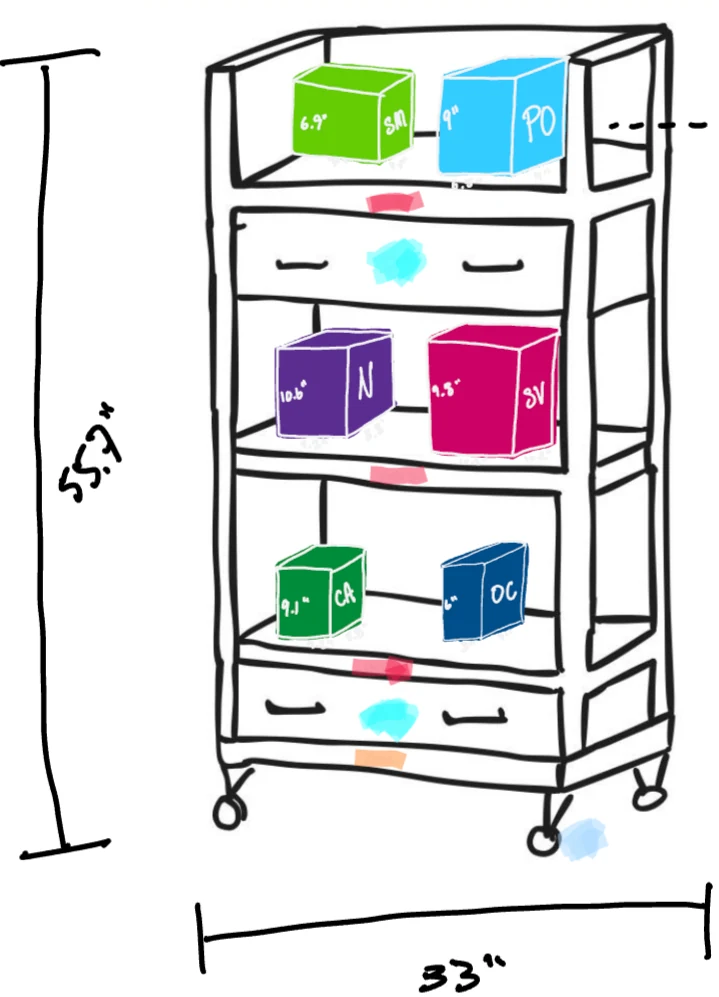
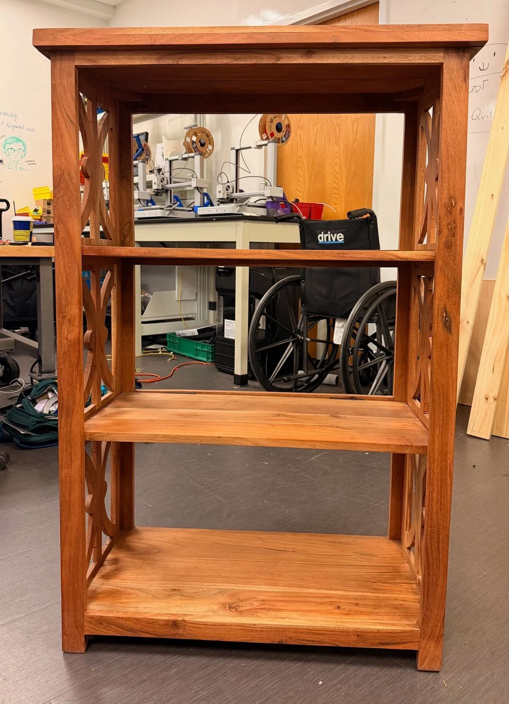
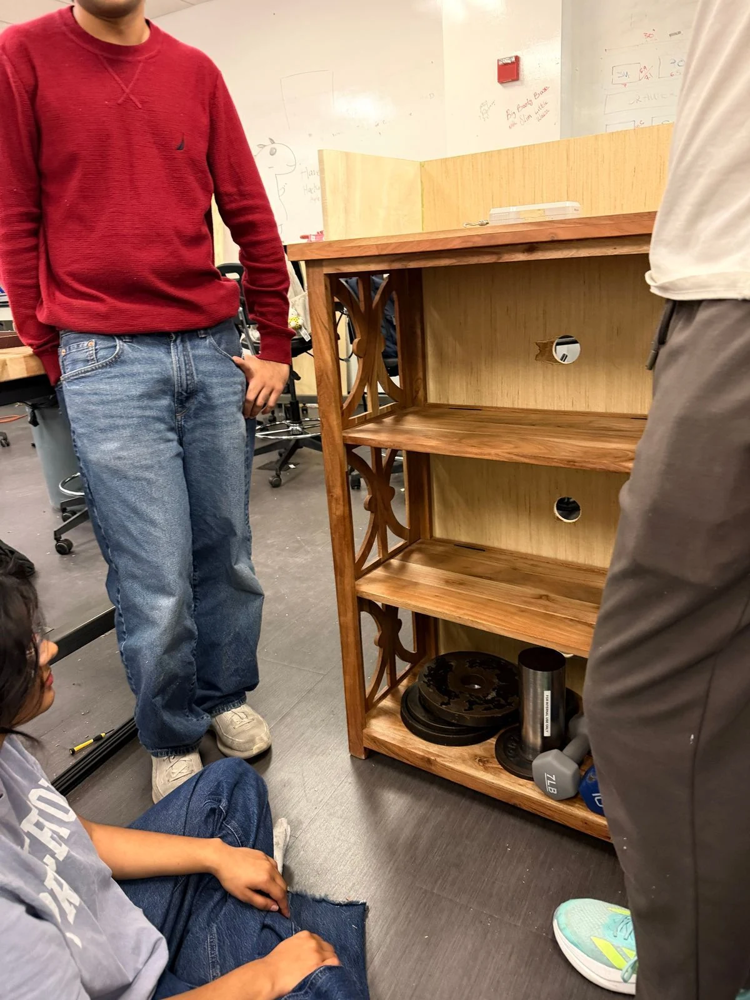
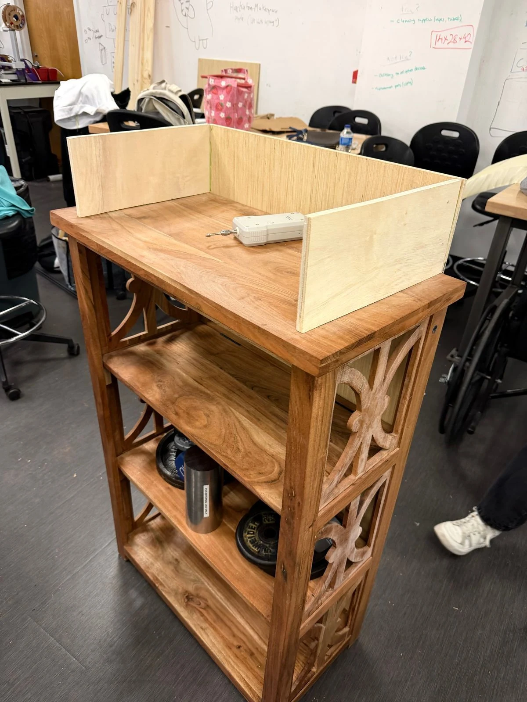

Keep equipment organized and within reach.
The family’s existing makeshift cart had problems with stability, tangled cables, and limited storage. The design needed to bring the equipment together in one place and make it easier for the caregiver to access during everyday use.
The team’s concept organized the devices on shelves above drawer storage. The cabinet provided a starting structure that could be adapted during the three-day Make-A-Thon.


Adapt the cabinet around the equipment.
The bill of materials specified an oak cabinet measuring 28 × 42 × 14 inches, a plywood back panel, shelf side panels, and four 2-inch locking swivel casters. Corner braces were specified for the panel connections. The design also called for clear PETG front panels, hinges, and magnets.
Dedicated shelf space keeps the equipment visible and accessible.
Circular openings in the plywood back provide routes for the equipment cables.
The specified swivel casters allow the cart to move and lock in position.


Back panel, cable openings, and shelf sides.
The assembly guide starts with the plywood back panel attached at the upper and lower shelves. Circular holes through this panel provide the cable routes. The next documented steps add the upper shelf sides using angle brackets, then cut the PETG front panels to fit the shelf openings.
The photographs below show the rear-panel work and the added upper shelf sides during assembly.




The original team build guide.
The TOM guide records the design brief, team credits, bill of materials, and assembly steps. It is the source for the concept sketch and assembly photographs on this page. The finished-cart photograph is from the Make-A-Thon team.
Concept sketch and assembly photographs from the team’s TOM documentation. Finished-cart photograph from the Make-A-Thon team. Cabinet dimensions refer to the listed base component.